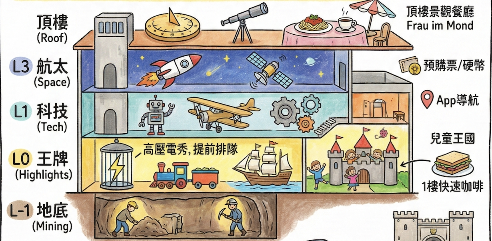

🏔️ 德國北義 每日行程規劃 (7/17 - 8/1)
✈️ 航班與座位資訊 (國泰航空 Cathay Pacific)
| 日期 | 航段 | 航班號 | 機型 | 起飛時間 | 抵達時間 | 劃位資訊 (共 4 位) |
|---|---|---|---|---|---|---|
| 2026/07/17 | 台北 (TPE) ➔ 香港 (HKG) | CX479 | A350-900 | 21:05 | 23:05 | 42A, 42B, 42C, 42D |
| 2026/07/18 | 香港 (HKG) ➔ 慕尼黑 (MUC) | CX301 | A350-900 | 01:00 | 08:05 | 31H, 31K, 32H, 32K |
| 2026/08/01 | 慕尼黑 (MUC) ➔ 香港 (HKG) | CX300 | A350-900 | 13:05 | 06:50 (+1) | 17A, 18A, 18D, 18G |
| 2026/08/02 | 香港 (HKG) ➔ 台北 (TPE) | CX466 | A350-900 | 09:00 | 11:00 | 12A, 12D, 12G, 14A |
🚗 SIXT 租車預訂總覽
【基本資訊與取還車】
| 項目 | 預訂細節 | 備註 |
| :--- | :--- | :--- |
| 預訂號碼 | 9732518290 | SIXT 預付帳單號：1001020002453101 |
| 主駕駛人 | POYU HUANG | 現場需出示：①護照 ②本國駕照 ③國際駕照 ④預訂信用卡(VISA 108) |
| 車輛組別 | LFDR | 例如：VW Touareg 或同級休旅車 |
| 預付總額 | € 1,522.81 | 已於 2026/4/4 透過 VISA 108 卡全額支付 |
| 現場押金 | € 500.00 | 取車時於信用卡凍結，還車後數日解除 |
| 取車資訊 | 7/18 (六) 10:30 | Munich Airport Terminalstr. Mitte/MWZ (取車寬限期 60 分鐘) |
| 還車資訊 | 8/01 (六) 10:30 | Munich Airport Terminalstr. Mitte/Parkhaus P6 (建議當日 09:00 提前抵達以預留退稅時間) |
【已包含服務與保險細目 (已預付)】
* 核心保障：全險/竊盜險 (Vollkasko-/Diebstahlschutz)、最低自負額減免、第三方責任險
* 駕駛與乘客：額外駕駛人 (Zusatzfahrer)、兒童增高座椅 (Kindersitzerhöhung)
* 車輛裝備：跨境駕駛許可 (Cross-border driving)、全輪驅動 (All-wheel drive)、GPS 導航與連線功能
* 其他規費：地點附加費、註冊費、24/7 故障協助 皆已含在總額中
[!IMPORTANT]
✅ 待辦事項 (To-Do List)
- [ ] 行前準備：出發前完成線上 Check-in (SIXT App)：出發前一週，下載 SIXT App 並登入您的訂單，提前把護照、國際駕照等資料拍照上傳完成「Online Check-in」，可大幅縮短當天現場人工核對證件與建檔的時間。
- [ ] 行前準備 (7/15 ~ 7/17)：填寫 Travel to Europe App (歐盟 EES 官方 App)：請於上飛機前 (抵達慕尼黑前 72 小時內即可) 事先為全家人輸入護照資料與入境問卷，過海關時出示 QR Code，能大幅省去海關現場打字與問話的時間。
* 📱 App 填寫通關小抄 (請照抄以下標準答案)：
* 抵達航班 (Arrival Flight)：CX301
* 離境航班 (Departure Flight)：CX300(若需填寫回程)
* 旅遊目的 (Purpose of Stay)：Tourism或Holiday
* 預計停留天數 (Duration of Stay)：15 days
* 首晚住宿名稱 (Accommodation Name)：Residence Ciastel
* 首晚住宿地址 (Address)：Str. Minert 2, I-39046 Ortisei in Val Gardena, Italy
* 飯店電話 (Phone Number)：+39 0471 798288(若 App 需填寫聯絡電話)
- [ ] 7/18：抵達 Ortisei 飯店 Check-in 時，務必向櫃檯預約隔天早上的麵包配送 (Bread Delivery) 服務，確保隔天一早有早餐可吃。
- [ ] 7/18：Val di Funes 停車場寄信給車牌（取車後務必在 7/20 中午 12:00 前發 email 至info@odlesdolomites.com更新真實車牌）。
- [ ] 7/21：Val di Funes Parking Zans 停車場預約（選Parking Zans→Car→7/21→ 最早時段 → 車牌先填AB000CD）。最晚取車當天完成預約。
- [ ] 7/22：Rifugio Comici 午餐 ✅ 已訂位（12:00，4人）。若天氣太差不上山，記得提前寫信取消預約。
- [ ] 7/24：晚餐地點尋找與安排（或確認自己煮）。
- [ ] 7/25：移動日晚餐尚未決定，應該要訂（抵達 Misurina 後，在米蘇里納湖畔找一間好餐廳）。
- [ ] 7/26 🔥：Auronzo 三尖峰停車場預約 — 系統已於 4 月底開放，請立即至 pass.auronzo.info 搶購06:00–08:00時段！ 費用 €40／12 小時，出發前 5 天可全額退款，車牌最晚入場前一晚 23:59 補登。
- [ ] 7/27：大鐘山冰川公路門票。⚠️ 必須等 7/18 拿到租車、確認車牌號碼後，再至 官網 Ticket Shop 購買並截圖 QR Code（或當天直接開到閘口刷卡買票亦可）。
- [ ] 7/27：卡普倫 (Kaprun) 晚餐尚未安排。預計當晚 18:10 抵達 Vötter's Hotel，需提早尋找附近餐廳並評估是否需要先訂位（或直接確認是否在飯店內用餐）。
- [ ] 7/28：Ramsau 午餐地點尚未決定。需提前尋找 Ramsau / Berchtesgaden 附近適合的午餐餐廳。
- [ ] 7/28：晚上 Check-in 時請飯店將隔天早餐改成 Lunch Box 形式（方便隔天早出發）。
- [ ] 7/29 🔥：國王湖船票預購，現在就買可省去現場排隊！至 shop-ks.seenschifffahrt.de 選 7/29 日期，票種選「Seelände → Salet 全程來回」，出發時間選最早班 08:15。⚠️ 票券不可退款、不可換日期，確認天氣與行程後再下單。買完務必將 PDF 存到手機離線資料夾（國王湖附近手機訊號極差）。
- [ ] 7/29：晚餐地點尚未決定。需提前尋找 Schönau am Königssee 附近適合的晚餐餐廳（或確認能否在 St. Bartholomä 的 Fischerstüberl 餐廳下午就解決晚餐）。
- [ ] 7/30：慕尼黑晚餐方式待決定。選項 A：出外吃，推薦 Augustiner Klosterwirt 或 Ratskeller München（市政廳地窖）（旺季建議提前確認是否需訂位）。選項 B：回飯店自己煮（Harry's Home 是公寓式酒店，房內有廚房設備，可在 Check-in 後順路至對面 Kaufland 超市採買食材）。
- [ ] 7/30：耶拿峰纜車票，可以考慮提前在 官網 購票，到時候再決定。
- [ ] 7/31 🔥：德意志博物館電子票預購，於 7月10日左右 (提前三週) 至 官網售票頁面 購買指定時段門票 (Time-slot Ticket)，並備妥 1 歐元或 2 歐元硬幣供寄物櫃使用。
- [ ] 7/31：晚餐安排，找尋卡爾廣場周邊或亞洲菜餐廳（並確認是否需訂位）。
- [ ] 8/1：退稅前置作業 (7/31 晚上)，填妥所有退稅單據（簽名、護照、姓名、地址），並將要退稅的物品（如液體保養品、刀具）集中放進欲託運的行李箱。
根據您帶 7 歲小孩的腳程（成人 0.7 倍速）、喜歡寬敞安全步道、定時需要廁所與咖啡廳休息的習慣，我為您挑選了該區最精華且最友善的親子路線。
[!CAUTION]
🚨 2026 年出行必修：強制預約與死線總整理 🚨
根據最新限流政策，您的行程中有幾個核心景點及餐廳必須「強制事先預約」，否則將無法進入：🚗 交通與纜車限流預約
1. Seceda 纜車 (7/20)：2026 年夏季開始實施線上預約指定時段 (Time-slot)（每半小時為一梯次限流）。根據官網最新公告，售票系統已於 4 月份 正式上線開放預約！請務必現在就上官網 seceda.it 搶下早晨黃金時段。
* 💳 買票戰略建議： 2026 年成人來回票價高達 70 歐元。強烈建議您「只買單程上山票 (One-way) 46.5 歐元」！請特別注意：訂票時系統會詢問目的地，請務必選擇「Seceda (山頂站)」，絕對不要只買到 Furnes (中繼站)，否則還得自己爬超陡的上坡才能到刀鋒山！
* 搭配我們為您設計的「不走回頭路、純下坡」神級路線，直接走到另一頭的 Col Raiser 搭纜車下山（單程約 20 歐）。不僅總價更便宜，而且完全免除爬上坡的痛苦！
✈️ July 18 (六) 第一天：入境與跨國長征 (Arrival Day)
這天是星期六，正好逢歐洲暑假大連假出遊車潮的最佳塞車時段。加上今年起慕尼黑機場實施 EES 新生物辨識通關 所導致的大塞車，今天唯一的目標就是「安全、順利地把車開到義大利飯店」。
⏳ 殘酷且真實的時程沙盤推演 (針對您 08:05 降落的國泰航空 CX301 班機)：
* 08:05 - 11:15 【海關地獄與 Family Lane 戰略】：下飛機過 EES 海關、提領行李。
* 🔥 衝刺戰略：下飛機後「能走多快就走多快」！盡全力超越同班機的人潮，提早抵達查驗區。
* 👨👩👧👦 Family Lane (家庭通道) 必用秘技：由於 EES 新制上路，但 12 歲以下兒童豁免按指紋，無法使用自助機台。請抵達排隊區時，直接尋找工作人員並表明有 7 歲小孩同行，要求走 Family Lane (家庭通道) 去人工查驗櫃台。
* 👨👩👧👦 全家同進退：所有同行大人請務必跟小孩走在一起通關！ 海關會將您們視為一個「同行家庭 (Traveling Party)」一起審查。小孩不需按指紋，大人則直接在人工櫃台完成指紋與拍照即可，這能幫全家人省下極大的排隊時間，千萬不要讓任何同行家人被拆散去排一般隊伍。
* 11:15 - 12:45 【租車大戰】 (預訂時間 10:30, 緩衝期 60 分鐘)：領完行李後前往慕尼黑機場 SIXT 櫃台 (Terminalstr. Mitte/MWZ)。
* 🚗 租車憑證資訊：SIXT 預訂編號 9732518290，主駕駛 POYU HUANG，預借車型 LFDR (VW Touareg 級別)。已含兒童增高墊、額外駕駛及跨境費，全險已付費。
* 💡 必備文件 (不可放行李箱)：抵達櫃台時主駕駛必須出示：① 預訂信用卡(VISA 108) ② 護照 ③ 台灣駕照正本 ④ 國際駕照。
* 🏃 戰術建議：抵達大廳後，主駕駛拿齊上述 4 樣文件「先空手衝去 SIXT 櫃台排隊抽號碼牌」，另一人帶小孩悠哉等行李再推車過去會合。
* 12:45 - 17:45 【塞車長征與跨國收費】：離開慕尼黑，行經奧地利，直達義大利 Ortisei。
* 🗺️ 今日導航路線：點此開啟含有 4 個推薦休息站的 Google Maps 路線 (機場 -> 德國 A8 -> 奧地利 A12/A13 -> 義大利 A22 -> Ortisei)
* 🚗 奧地利高速公路通行證 (Vignette)：租車通常不含此證。離開德國邊境前，務必停靠休息站加油站（如 Irschenberg），購買「實體貼紙」貼在擋風玻璃左上角（約 10 歐元）。或拿到租車知道車牌後，立刻用手機上 ASFINAG 官網 買「1 日數位通行證 (1-Day Digital Vignette)」，立即生效免貼紙！
* 💳 布倫納山口過路費 (Brenner Pass / A13)：這是「不包含在 Vignette 內」的額外高山過路費！遇到收費站時排一般車道刷卡付費即可。🔥 進階戰略：知道車牌後，提前在 ASFINAG 官網加買「數位過路費 (Digital Section Toll)」。購買路徑：首頁選 Digital Section Toll ➔ 路線務必選 A13 Brenner motorway ➔ 買單程 1 trip ➔ 輸入車牌與國家 (德國)。過收費站時直接走綠色車道 (Video Toll / PKW Digital)，攝影機會掃車牌自動開柵欄，秒殺長長車陣！
* 🇮🇹 義大利高速公路收費 (Autostrada)：進入義大利 Vipiteno 收費站時，走白色通道「按鈕取票 (Biglietto)」。下 Chiusa 交流道時插入票卡，刷信用卡付費。
* 💡 塞車預警：正常車程 3.5 小時，但週六南下通常嚴重塞車，建議抓 5 小時行車時間。
* 17:45 - 18:45 【中途休息與快速晚餐】：此時台灣時間已經是半夜 12 點，司機與小孩肯定很睏了。強烈建議在下方第 ④ 站「Area di Servizio Plose Ovest」Autogrill 把晚餐解決（買熱狗堡、現烤帕尼尼），千萬別餓著肚子開夜路。
* 18:45 - 19:45 【抵達飯店與秒躺平】：抵達 Ortisei Residence Ciastel 辦理入住手續，卸下行李。(⚠️ 記得向旅館結帳櫃檯預約隔天早上的麵包配送 Bread Delivery！) 進房洗完澡大約晚上七、八點 (台灣時間半夜 1-2 點)，不需再出門，全家直接躺平一覺到天亮！
* ✅ 抵達 Ortisei 導航注意事項（飯店已確認不在 ZTL 範圍）：
* 飯店已來信確認 Residence Ciastel 位於 ZTL 管制區之外，直接開車抵達即可，不需要白名單申請、不需要特別繞路。
* ⚠️ 導航請打全名：RESIDENCE CIASTEL, Via Minert 2, Ortisei——Ortisei 另有一間「CASTEL」位於 ZTL 區內，打錯就開進管制區！務必確認是「CIASTEL」（帶 i）。
* 抵達途中如有問題，飯店提供 WhatsApp 即時聯絡。
* 🔥 戰略隱藏優勢：維持台灣時差！ 這樣不僅讓司機徹底得到休息，隔天全家人更能精神百倍地在歐洲時間 清晨 06:00 輕鬆自然醒。這將直接成為您未來 5 天完美執行「早上出門包場步道、下午回飯店避開大雷雨」的無敵外掛武器！
⛽ 沿途休息站推薦 (依照疲憊程度，可任選 1-2 處停靠)：
1. 【開車 40 分鐘的絕美觀景台】Irschenberg (德國 A8)
* 特色： 您聽說的完全正確！這個休息站位在半山腰上，擁有毫無遮蔽的巴伐利亞阿爾卑斯山全景 (Panoramic View)，被譽為德國最美的高速公路休息站之一。裡面有知名的 Dinzler 咖啡烘焙坊與麥當勞，非常適合一邊看山景、一邊喝杯頂級 Espresso 提神再上路。
2. 【開車 1.5 小時的必停站】Kufstein Süd / Inntal (德奧交界)
* 特色： 剛進入奧地利境內。如果您租車時尚未購買奧地利高速公路通行證 (Vignette)，這是必停站！可以去加油站買貼紙，順便讓小孩下來走跳放風。
3. 【開車 2.5 小時的絕景中繼站】Europabrücke 歐洲橋休息站 (奧地利 A13)
* 特色： 位於因斯布魯克 (Innsbruck) 附近，就在準備翻越阿爾卑斯山的最險要處。休息站旁邊就是壯觀的「歐洲大橋」，可以直接在那邊的餐廳看風景吃午餐，順便欣賞深谷。
4. 🍽️ 晚餐站【開車 3.5 小時的首發義式體驗】Area di Servizio Plose Ovest (義大利 A22)
* 特色： 這是下交流道前最後一個完美順向 (南下車道) 的義大利大型休息站，也是上方 17:45 時段的晚餐停靠點。司機可以在這裡站著喝第一杯 1.5 歐元的超道地義大利 Espresso，點一份現烤的 帕尼尼 (Panini) 三明治當晚餐。
🌻 July 19 (日) 輕鬆暖身：休斯高原 (Alpe di Siusi)
為何排在這天： 週末避開車潮，從住宿直接走路去搭纜車！高原腹地極大，能完美稀釋週末人潮。
🚗 交通 (從 Residence Ciastel 出發)： 步行約 10 分鐘至 Mont Sëuc 纜車站，搭纜車直達山頂。(不用開車)。
🥾 今日與鎮上可能行經步道總覽：
| 路線屬性 | 實際步道編號 (Trail) | 路線重點與終結點 |
|---|---|---|
| 輕鬆親子小環線 | 6A ➡️ 6 ➡️ 6B |
高原精華、Sanon 山屋 (吃午餐) |
| 體力好長征大環線 | 9 ➡️ 30 ➡️ 3 ➡️ 6B |
谷底 Saltria、Rauchhütte、Sanon 山屋會合 |
| 進階岩石秘境線 | 6 ➡️ 7 ➡️ 8 |
遠離草皮，朝向 Rifugio Molignon (莫利農) |
| 全日大備案：女巫草甸 | Trail 14 (Puflatsch / Bullaccia) |
需搭巴士至 Compatsch，去尋找奇岩「女巫長椅」 |
| 午後放電：大型遊樂場 | Luis Trenker Promenade (無編號) |
沿著舊鐵道遺跡的鎮上散步徑，直達木頭遊樂設施 |
| 午後放電/平地大備案 | Trail 9 (Val d'Anna / 安娜谷) |
從纜車站旁出發的林蔭步道，推車可達，沿途滿是吊床 |
-
🎯 【終極同樂分流方案】：全家合體午餐 ＋ 午後各自放電 (完美克服時差早起)
因應時差早起，全家統一搭乘 08:30 首班纜車上山，並鎖定 11:30 於中繼點 Sanon 山屋 共同享用午餐，吃飽後兵分兩路！ -
上半場：08:45 - 11:30 【全家合體漫步與早茶】
- 所有人從 Mont Sëuc 出發，一起走右側平緩的 Trail 6A 轉 6。這段路毫無難度且無比開闊，以輕鬆組的小孩節奏緩步推進、拍合照。
- 09:30 必停早茶點：中途經過 Malga Contrin (Contrin 山屋)，這時候請立刻坐下，幫大家點熱可可跟蘋果捲。不僅能在清早取暖，還能完美填補五點起床提早發作的飢餓感，順便殺掉 45 分鐘！
- 11:00 抵達大會合點：漫遊抵達 Malga Sanon (Sanon 山屋)。讓小孩去衝向大草皮與動物遊具玩瘋，大人在陽光下放鬆。
- 11:30 - 12:30 山屋午餐：11:30 正好是國外餐廳剛開門的時間！全家人在無敵美景前面對面享用烤肉、披薩與啤酒。
-
下半場：12:30 吃飽後 【正式分流出發】
- 【輕鬆組 (帶小孩)】👉 下山回鎮上睡午覺／去遊樂場
小孩子吃飽後剛好想睡覺，這時候沿著左半邊的 Trail 6B (途中會經過 Schgaguler Schwaige) 慢慢散步。大約 1 小時 (13:30) 就能走回纜車站，下午兩點可以舒服地躲回鎮上飯店睡午覺！ - 【體力好的家人】👉 往腹地深處長征 (預計多走 3.5 - 4 小時)
獲得大量熱量後，把 Sanon 當作「新起點」！往西走 Trail 3 切轉 Trail 30 (途中有機會路過超有名的 Rauchhütte 與 Gostner Schwaige)，一路下切到 Saltria，再沿 Trail 9 爬長上坡回纜車站，約傍晚 16:30 返回鎮上。（若不走這圈，也可從 Sanon 走平行的 6 轉 7 去山谷裡的秘境 Rifugio Molignon）。
- 【輕鬆組 (帶小孩)】👉 下山回鎮上睡午覺／去遊樂場
- 🛝 午餐後鎮上放電行程 (Ortisei's Playground)：中午回鎮上吃完飯後，超級推薦午後帶小孩去鎮上最有名的 Luis Trenker Promenade (路易斯・特倫克步道)，那裡有您看到的那個傳說中極度好玩的 Ortisei 大型木頭遊樂場！沿著滿是花草的舊鐵路平坦步道悠晃、吃著冰淇淋讓小孩攀爬放電，是完美的外國度假午後時光。
- 🛡️ 彈性備案 (若想徹底換路線)：
- 【原路線備案】：不上高山，改走 Ortisei 鎮上的 Val d'Anna (安娜谷步道入口)。步道入口就位在鎮上的 Seceda 纜車底站旁邊，是一條完全平坦的森林溪流步道，沿途有吊床、免費遊樂設施，走到盡頭吃蘋果卷。
-
【整天備案 1：Wanderkarte Trail 14 (女巫草甸環線)】：
- 交通：搭纜車上 Mont Sëuc，轉乘高山巴士 (Almbus) 10 分鐘抵達 Compatsch 總站。
- 玩法：跟著官方地圖走 Trail 14 (Puflatsch / Bullaccia 環線)。這是一條輕鬆的 2 小時景觀步道，沒有危險的陡坡。途中會經過傳說中的「女巫長椅 (Hexenbänke) 巨石」，非常適合跟 7 歲小孩講故事探險，且能俯瞰整個 Val Gardena 山谷。
-
🛒 今天記得買！ Despar Dolomiti 超市（步行即達，在 Str. Rezia 46）
- ⚠️ 週日特殊營業時間（夏季 7/1–9/9）：
10:00–13:15上午場 +16:00–19:15下午場 - 平日（週一至六）：08:00–19:15
- 💡 建議：下午回纜車站後（約 14:00），搭纜車下山，直接順路走進 Despar 補齊整週食材，免得之後幾天要另外安排採購。
⛰️ July 20 (一) 絕景打卡：刀背山 (Seceda)
為何排在這天： 週一平日，搭乘熱門纜車的人潮稍減。
🚗 交通 (從 Residence Ciastel 出發)： 步行約 12-15 分鐘（或搭鎮上電扶梯）至 Ortisei-Furnes-Seceda 纜車站。(不用開車，但須先網購指定時段票)。
🥾 今日與鎮上可能行經步道總覽：
| 路線屬性 | 實際步道編號 (Trail) | 路線重點與終結點 |
|---|---|---|
| 主線：神級大下坡縱走 | 1 ➡️ 2B ➡️ 13 ➡️ 4 |
刀背山崖、看驢子雙子壁、Rifugio Firenze，終點 Col Raiser 纜車站 |
| 外掛備案 (閃避限流人潮) | 2 (完全平坦) |
從 Col Raiser 頂站走到 Fermeda 吊椅站，直接空投刀背山頂 |
| 全日大備案：森林斜坡小火車 | Trail 35 (Resciesa) |
搭小火車上山，極度平坦漫步至絕美高山教堂 |
| 午後鎮上放電/散步徑 | Val d'Anna (安娜谷) |
Seceda 纜車站旁出發的林蔭平地徑，沿途滿是吊床與小溪 |
08:00🌟 主路線：神級大下坡縱走 (不走回頭路、純放電吃喝)08:30搭指定時段纜車上山。約 08:50抵達頂站。- 🎯 起點分流戰術： 一位大人陪小孩在頂站 Playground 玩耍，另外兩位大人到 觀景台 (Panorama Seceda) 拍刀背山斷崖 📸，拍完走回遊樂場會合。（約 30 分鐘）
約 09:20🥾 全家出發，走 Trail 1 👉 2B 👉 13 👉 4：- 沿 Trail 1 順著懸崖邊緣往下走（最平緩舒適的起點）。
- 切入 Trail 2B 穿過大草坡，抵達 Malga Pieralongia 山屋。雙子星奇石 + 驢子牛群 + 沙坑鞦韆。
約 10:45抵達，停留 30 分鐘。 - 繼續 Trail 2B 轉 Trail 13 全景大下坡，抵達 Rifugio Firenze。
約 12:15🍽️ 午餐（約 1.5 小時）。 - 走 Trail 4 散步抵達 Col Raiser 纜車站。
約 13:45出發，約 14:25到站。 - 💡 【近路備案】 在 Pieralongia 若小孩累了，直接切 Trail 4A 斜線回 Col Raiser，跳過 Firenze 山屋。
-
搭 Col Raiser 纜車下山至 S. Cristina，轉 350/352 公車（憑 Val Gardena Mobil Card 完全免費）。
約 15:15🏠 回到 Ortisei！ -
🛝 下午鎮上放電行程 (神級森林步道 Val d'Anna)：搭纜車回到 Ortisei 鎮上後，千萬不要馬上回飯店！ Seceda 纜車站的旁邊就是極度出名的 Val d'Anna (安娜谷步道入口)。這是一條推嬰兒車也能走，長約 20 分鐘的純平地綠蔭滿分步道，沿途有過河吊橋、滿滿的免費林間吊床，可以讓大人躺平休息。終點更是超棒的露天山屋與大草皮遊戲區，小孩保證再度玩瘋。
- 🛡️ 天氣與預算彈性備案 (若不想花 40 歐元跟天氣對賭，隨到隨買的完美退路)：
- 【備案 1：終極外掛空投！Col Raiser 轉 Fermeda 纜車神玩法】：如果您當初沒搶到 08:30 的黃金時段，或當天臨時想臨時改期上山卻買不到票，請直接啟動這組「免預約空投」終極備案！
- 交通：改開車約 10 分鐘到 S. Cristina 小鎮，現場買票搭乘 Col Raiser 纜車（這條線永遠不需預約排隊）至 2107m 頂站。
- 無痛換乘：出站後，沿著非常平坦舒適、連嬰兒車都能推的 Trail 2 緩下坡散步約 15-20 分鐘當暖身，抵達 Fermeda 吊椅纜車的底站 (Cuca 2050m)。
- 登頂與玩法：搭上 Fermeda 雙人吊椅只需大概 5 分鐘，就能把您直接空投到名氣最大的 Seceda 山頂 (2500m) 刀背山斷崖旁！接著您只要完全照著上面的「主路線 (大下坡縱走)」，一路往下吃喝玩樂走回 Col Raiser。完美破解 Ortisei 主纜車的限流噩夢！
- 【備案 2：Wanderkarte Trail 35 (Resciesa 森林鐵路)】：改搭同在 Ortisei 鎮上的 Resciesa 斜坡小火車。出站後沿著平坦的直線步道走 40 分鐘抵達漂亮小教堂。
🌲 July 21 (二) 童話村莊：富內斯山谷 (Val di Funes)
為何排在這天： 平日前往，大幅增加搶到 Zanser Alm (德) / Malga Zannes (義) 停車格的機率。
🚗 交通 (從 Residence Ciastel 出發)： 開車約 45 分鐘抵達 Zanser Alm (德) / Malga Zannes (義) 停車場（同一個地方，兩種語言叫法）。(⚠️ 目前已開放預約，請盡速上 官方預訂系統 odlesdolomites.com 搶下車位)。
📋 預約操作步驟（進入網站後照順序選）：
| 步驟 | 欄位 | 選什麼 |
|---|---|---|
| ① | 停車場選擇 | 點開 Parking Zans（第一個選項），再點 "Parking Zans online reservation" 連結（實際訂票系統在 portal.funes.guest.net，若出現憑證警告可忽略繼續） |
| ② | 車型 | Car（Autovettura） |
| ③ | 日期 | 2026年7月21日 |
| ④ | 抵達時間段 | 選最早的早上時段 |
| ⑤ | 車牌號碼 | 先填 AB000CD（官方租車替代代碼，取車後再寄信更新） |
| ⑥ | 費用 | 約 €10–12（現場也可，但有預約才保證能進場） |
- 📧 取車後（7/18-19），務必在 7/20 中午 12:00 前 發 email 至
info@odlesdolomites.com更新真實車牌，否則當天可能被拒絕進場 - 🎟️ 預約完成後會收到含 QR Code 的確認信，當天進場掃碼即可
- 🧾 7/21 出發時攜帶訂位確認單（或手機截圖）備查
[!CAUTION]
🚦 2026 年 5-11 月 富內斯谷新交通管制（對您的影響分析）
1. St. Magdalena 觀景點設閘門路障：開車無法直上教堂上方觀景點。✅ 對您無影響 — 您本就計畫在村莊停車後步行 5-10 分鐘上去，本來就不開車進去。
2. Zanser Alm (德) / Malga Zannes (義) 停車場限額預約 + Ranui 紅綠燈：🟢 綠燈 = 現場付費進場；🔴 紅燈 = 僅持預約證明的車輛通行。✅ 對您無影響 — 只要提前在 odlesdolomites.com 完成預約，亮紅燈仍可通行。若萬一沒有預約遇到紅燈，請見下方備案。
- 🚻 廁所情報（帶小孩必看）：
Zanser Alm / Malga Zannes 停車場：✅ 有公共廁所（停車場旁）Malga Zannes 小屋：✅ 消費顧客可使用步道中途（林道段）：❌ 完全無廁所，出發前請先上好Geisleralm 蓋斯勒山屋：✅ 顧客廁所（點餐即可使用，山屋禮儀）Gschnagenhardt Alm：✅ 顧客廁所-
Santa Maddalena 村莊：✅ 遊客中心內有廁所；Hotel Fines 消費顧客可使用 -
主路線：Adolf Munkel Weg / Trail #35-36 / Via delle Odle
⏱️ 預估時間軸（
08:00從 Ortisei 出發）
| 時間 | 事項 |
| :--- | :--- |
|08:40| 📍 途中停靠 Ranui 聖約翰禮拜堂 拍照（約 20 分鐘，富內斯必拍景點之一）。 |
|09:15| 抵達 Zanser Alm / Malga Zannes 停車場，先上廁所，在 📍 Malga Zannes 小屋 補充能量，開始健行。 |
|11:00| 🍽️ 抵達 Geisleralm 午餐（上廁所），約 1-1.5 小時。 |
|12:30| 走 Trail #35 精華段（逆時鐘環狀，沿山峰底部，最美風景留最後）下山回停車場。 |
|14:00| 回到停車場，開車前往 Santa Maddalena（約 20 分鐘）。 |
|14:20| 🏛️ Puez-Geisler 自然公園遊客中心 參觀（30-45 分鐘，內有廁所，週二開放 ✅，含 Reinhold Messner 影片）。 |
|15:00| ☕ Hotel Fines 露台咖啡廳 喝飲料休息（約 30 分鐘，有廁所）。 |
|15:30| 📸 St. Magdalena 教堂 正面拍攝，再步行上 Panorama Sitzbank 俯拍（2026 起禁止開車，步行 5-10 分鐘）。 |
|18:00| 🍽️ 前往 Pitzock 吃晚餐（⚠️ 已寄信預定，富內斯眼鏡羊 Slow Food 認證）。 |
|19:30| 用餐完畢離開餐廳，此時天還是全亮的（甚至運氣好能看到黃金光線）。 |
|19:40| 🚗 開車回 Ortisei（約 45 分鐘，夏季此時路面明亮、路況好開）。 |
|20:25| 🏠 回到 Ortisei 飯店休息（此時天色才剛準備變暗）。 | -
關於這條步道： 難度簡單到中等，非常適合帶小孩。大部分時間在樹林間穿梭，不時與牛群相遇，氛圍悠閒療癒，壯麗感相對收斂（比起 Seceda 或休斯高原）。
- 💡 走法建議（Throne & Vine 推薦）：逆時鐘環狀 — 去程 Trail #36（較寬林道）上山，回程 Trail #35（沿山峰底部精華段）下山，最美風景留到最後。路況： 約 9 km 環狀，爬升 ~380m，來回含休息約 4-5 小時（親子腳程）。動線： 📍 停車場 → 📍 Malga Zannes 小屋（出發前補充能量）→ Trail #36 → 📍 Geisleralm + 📍 Gschnagenhardt Alm → Trail #35 → 回停車場導航提示： 步道分岔多，沿指標往 Geisleralm 或 Gschnagenhardt Alm 方向走即可，不會迷路。休息： Geisleralm（多洛米蒂電影院）— 木製躺椅正對蓋斯勒岩峰，被稱為「全多洛米蒂最美觀景台」；餐廳外有兒童遊樂場。⚠️ 週一公休（您排週二 ✅）資料來源： Travel with Erin（中文）・Throne & Vine ⚠️（英文）
- 🛡️ 彈性備案 (若 Zanser Alm / Malga Zannes 亮紅燈且無預約)備案 1（推薦）：把車停在 Santa Maddalena 的替代停車場（📍 Ranui / Putzen / Filler），搭 330 號接駁巴士（每小時一班）上 Zanser Alm / Malga Zannes，一樣可以走步道。備案 2：直接在 St. Magdalena 村莊周圍走輕鬆的 Panorama Trail（全景步道），遠望山峰與教堂即可，適合體力較差或時間不足時。
🪨 July 22 (三) 奇岩迷宮：Passo Sella & 棺材纜車
為何排在這天： 平日前往，以利提早卡位不用預約的高山停車場。
🥾 今日可能行經步道總覽：
| 路線屬性 | 實際步道編號 (Trail) | 路線重點與終結點 |
|---|---|---|
| 主線：巨石城迷宮探險 | Trail 526 (Città dei Sassi) |
穿梭巨石陣，無爬升直達 Rifugio Comici 吃午餐後原路折返 |
| 鎮上備案：安娜谷叢林 | Val d'Anna (無編號) |
飯店直接出發，走平穩小溪步道戲水，或去旁邊森林繩索公園放電 |
| 鄰鎮備案：水陸大闖關 | PanaRaida (無編號) |
開車10分鐘直達 Monte Pana，專門給小童破解水壩與木製迷宮 |
| 高山備案：女巫草甸 | Trail 14 (休斯高原) |
從飯店直接去搭纜車，這是一條零開車、充滿巨石傳說的輕鬆路線 |
-
主路線 (迷宮探險)：
⏱️ 預估時間軸（
07:20從 Ortisei 出發，提早到停車場卡位）
| 時間 | 事項 |
| :--- | :--- |
|07:20| 🚗 從 Ortisei 飯店出發（車程約 40 分鐘，需早起卡位） |
|08:00| 📍 抵達 Passo Sella Parking，進入停車場（建議 08:00 前抵達） |
|08:30| 走到對面搭乘 棺材纜車 Telecabina Sassolungo 上山 |
|08:45| 抵達頂端的 Rifugio Toni Demetz，喝杯熱可可、拍山坳美景（待 30-45 分鐘） |
|09:30| 🚠 全家人原車搭棺材纜車下山（千萬別走下山，全是陡峭危險碎石） |
|09:45| 回到底站，上個廁所準備健行 |
|10:00| 🥾 開始走 Trail 526 (Città dei Sassi 巨石城迷宮)，看落石奇景 |
|11:30| 抵達 Rifugio Comici 夢幻藍餐廳（✅ 已訂位 12:00，4人）。先讓小孩去山屋旁草地玩 超長綠色溜滑梯 🛝，大人休息等開桌 |
|12:00| 🍽️ 入座享用高山地中海料理（海鮮為主），小孩吃飽後繼續在戶外草地跑跑 |
|13:30| 吃飽喝足，沿原路 Trail 526 走回停車場（完美破解官方單向陷阱，保證拿車） |
|14:30| 回到停車場，開車下山 |
|15:15| 🏠 回到 Ortisei！下午可在鎮上超市補給或好好休息 | -
🍽️ 午餐預約與天氣備案預約策略：✅ 已訂位（12:00，4人）。若到了當地前兩天看天氣預報下雨，寫信取消即可，完全不用有壓力。B計畫（突然下小雨 / 洗手間對策）：抵達 Comici 後，可以改成在旁邊的戶外小吧台快速買個熱狗吃。如果不想在外面吹風，那就提早走原路回 Passo Sella 停車場，停車場旁邊就有 Rifugio Passo Sella 或 Rifugio Valentini 可以吃傳統義大利麵避雨，而且幾乎永遠有位子。C計畫（早上下暴雨）：若早上 7 點看窗外下大雨，千千萬萬別開車上去（下雨的巨石陣和沒有包廂的棺材纜車非常濕冷且危險），直接啟動下方的「鎮上備案：安娜谷叢林」。
-
🛡️ 彈性備案備案 1：安娜谷 + 繩索攀爬公園（最輕鬆，走 5 分鐘）：從飯店步行前往 Seceda 底站旁的 Val d'Anna (安娜谷) 步道。沿途有大吊床與免費戲水區，再讓小孩進旁邊的 Col de Flam 森林高空探險樂園 瘋狂玩超大彈跳床、繩索攀爬與森林溜索。備案 2：PanaRaida 兒童冒險步道（最好玩）：直接開 10 分鐘的車到隔壁村的 Monte Pana 停車場（或搭公車）。PanaRaida 兒童冒險步道內有木製水壩、樹屋跟大型迷宮。備案 3：Trail 14 休斯高原女巫草甸環線（零開車聽故事）：從 Ortisei 出發搭 Ortisei-Alpe di Siusi 纜車 上休斯高原轉乘巴士。充滿神秘「女巫長椅 (Hexenbänke)」巨石傳說的輕鬆景觀步道，超適合向小孩說故事探險。備案 4：Col Raiser 纜車與 Firenze 山屋（極致放鬆）：搭 10 分鐘公車到 S. Cristina 換搭 Col Raiser 纜車 上山。出站往下走 20 分鐘抵達 Rifugio Firenze，在群山環抱的盆地草坡上極致放鬆。
🚂 July 23 (四) Resciesa 森林小火車與鎮上溫泉水上樂園
為何排在這天： 前面連續幾天高山健行與開車後，這天安排留在 Ortisei 鎮上，不開長途車，全程輕鬆無壓力。
[!NOTE]
📋 排程備忘： 休斯高原 (7/19) 與刀背山 Seceda (7/20) 均已安排完畢，第一優先條件已滿足！
今天執行「③ Resciesa 小火車（上午）+ ④ Mar Dolomit 游泳池（下午）」，兩者都在 Ortisei 鎮上，完全不用開車！
🚞 今日路線總覽：
| 段落 | 方式 | 路線說明 | 費用 |
|---|---|---|---|
| ① 上山 | 3號 Resciesa 斜坡小火車 | 飯店步行 5 分鐘至底站，搭車上山 | ✅ Gardena Card |
| ② 漫步 | 步行 Trail 35（約 40 分鐘） | 頂站 → Santnerspass 石頭小教堂，全程超平坦 | 免費 |
| ③ 下山 | 步行 or 斜坡小火車 | 原路走回或搭車下山 | ✅ Gardena Card |
| ④ 下午 | Mar Dolomit 水上樂園 | 鎮上溫水游泳池與滑水道，步行可達 | 🏨 飯店免費資格 |
09:00🚞 上午：Resciesa 森林斜坡小火車- 從飯店步行 5 分鐘至底站，搭小火車上山。出站後沿 Trail 35 走到 Santnerspass 石頭小教堂 拍照俯瞰全鎮（全程超平坦，不會喘）。中途山屋咖啡廳喝可可吃蘋果捲。回程搭小火車下山（Gardena Card 免費）。
-
約 11:00回到 Ortisei 鎮上。 -
約 11:30🕛 午餐 + 逛小鎮（至約 14:00） -
11:30 先逛一下木雕工藝店暖身，等 12:00 餐廳開門後用午餐（義大利餐廳多從中午 12 點才開始營業）。飯後繼續逛特色小店：
- 木雕工藝品：Ortisei 是南蒂羅爾木雕重鎮，可以買到精緻的手工雕刻動物、聖誕擺飾當紀念品。
- 在地食材店：挑一瓶南蒂羅爾蘋果酒 (Apfelsaft)、Speck 風乾火腿或當地起司帶回飯店當宵夜。
- 冰淇淋 & 甜品：義大利手工 Gelato 是鎮上下午必買，讓小孩拿著 Ice Cream 邊走邊看櫥窗。
-
約 14:00🏊 下午：完美分流放電方案（全部免費！） -
【小孩組】→ Mar Dolomit 室內外溫水樂園（步行 5 分鐘）
- 飯店設施清單明確載明 Free entrance to MAR DOLOMIT，帶著飯店房卡或憑證直接入場即可，完全免費。
- 室內/戶外溫水游泳池與滑水道，讓小孩徹底在水裡放電 2~3 小時。
- 毛巾自備（或現場租借 €3 + €10 押金，僅收現金）。
-
【大人組】→ 飯店自家 Wellness「L Ciastel dla Dolomites」（在飯館內，零步行）
- 飯店自帶的頂級免費 SPA 設施，非常適合大人趁這段時間徹底放鬆：
- 🌊 熱水按摩泡泡浴 (Crespeina)
- 🔥 芬蘭桑拿 (Stua Ciauda)
- 🧊 冷水浸泡池 (Ega Freida)（桑拿後的經典提神儀式）
- 🌿 山草藥蒸氣室 (L Ciule)
- 🧂 鹽岩吸入室 + 遠紅外線 (Sas da Sel)
- 🎵 靜音沙發廳 / Alpha 平衡椅廳 / 色彩療癒鞦韆室
- 這組設施非常適合讓疲憊的司機或老人家在裡面完全躺平，讓體力完整恢復！
-
🛡️ 彈性備案 (若當天想出鎮走走大自然)：
- 【備案一：PanaRaida 兒童尋寶步道 (開車 15 分鐘)】：開車到 S. Cristina 的 Monte Pana 停車場，走全長 3 公里、極度平緩的環狀步道，沿途有 10 個大型原木闖關設施（水車、樹屋迷宮、森林巨大鞦韆）。
- 【備案二：Col de Flam 冒險公園 (步行即達)】：走路前往鎮上的 Col de Flam 冒險公園。高空繩索樂園，有兒童專屬黃色路線 (4-12 歲)、大彈跳床與可愛動物區。
🚡 July 24 (五) 備用空白日 (纜車大滿貫 / 峽谷瀑布)
概覽： 旅程最後的「精華挑戰日」！上午在 Selva 完成三台高山纜車大滿貫，俯瞰全程最不一樣的 Sella 群峰；下午沿 Passo Gardena 山口往東，到 Alta Badia 的溪谷帶小孩踩水。兩個地點地理上完美順路，一路往東不走回頭路！
[!TIP]
今天動線：Ortisei → Selva（上午纜車）→ 翻越 Passo Gardena 山口 → Colfosco（下午瀑布）
🚡 今日路線總覽：
| 段落 | 方式 | 路線說明 | Gardena Card |
|---|---|---|---|
| ① Selva → 上升 | 15號 Costabella 吊椅 | 從 Selva 鎮上出發，省去走坡路 | ✅ 含蓋 |
| ② → 2300m 頂站 | 13號 Dantercëpies 大纜車 | 直升山頂，出站即 Cir 峰全景震撼 | ✅ 含蓋 |
| ③ 步行段 | 步行 Trail 12A（約 30 分鐘） | 頂站 → Rifugio Jimmi 山屋，純緩坡下行 | — |
| ④ → Passo Gardena | 14號 Cir 吊椅 | 由上往下「坐著降落」至山口 | ✅ 含蓋 |
| ⑤ 取車（倒搭） | 14號 ↑ → 13號 ↓ 回 Selva | 原路倒坐回 Selva 取車 | ✅ 含蓋 |
| ⑥ 瀑布步道 | 步行（來回約 1.5~2 小時） | Colfosco → Cascate del Pisciadù 來回 | — |
[!NOTE]
💳 費用總結： 三台纜車（15號、13號、14號）全部含蓋在 Gardena Card 內，不需另外付費！連倒搭取車也完全免費刷。唯一需要另外付費的是 Colfosco 瀑布步道的停車場費用（約 €2-3/小時）。若您家裡沒有 Gardena Card，三台纜車的現場單程票每人約需 €10-15 左右。
- 🌄 上午：[15號 Costabella] ➡️ [13號 Dantercëpies] ➡️ 步行 (Trail 12A) ➡️ [14號 Cir]
08:30從飯店出發 → 開車 15 分鐘 → Selva 停車，開始連乘三台纜車。約 09:20🏔️ 13號頂站 (2300m)！ 含等車、買票、小孩慢走的 buffer，預計此時抵達山頂。出站無敵景。開始沿 Trail 12A 步行往 Jimmi 山屋（緩坡下行，小孩腳程預留 30 分鐘）。約 10:00抵達 Rifugio Jimmi (吉米山屋)，停留約 1 小時（含喝可可、拍照、上廁所、讓小孩在草坪跑跑）。-
約 11:00搭 [14號 Cir] 降落 Passo Gardena → 倒搭纜車回 Selva 取車（含等候、換乘，預留 40 分鐘）。 -
約 11:40🕛 開車前往 Passo Gardena 午餐 -
取車後開車 15 分鐘回到山口（含停車、找到餐廳，預留彈性）。山口山屋餐廳約 11 點開門，位子充裕。午餐預計 1 小時至 1.5 小時。
-
約 13:15🌊 Cascate del Pisciadù 瀑布步道 - 從 Passo Gardena 開車 10 分鐘抵達 Colfosco，導航至 Hotel Luianta 停車。
- 步道來回約 1.5 小時，含小孩踩水、拍瀑布、坐下休息，預留 2 小時緩衝。
-
約 15:15步道結束，開車 35 分鐘回 Ortisei（翻越 Passo Gardena）。 -
約 16:00🏠 回到 Ortisei 飯店！ 剩餘下午時間完全自由。 -
🍽️ 晚餐建議：7/24 是最後一晚住在 Residence Ciastel（公寓式住宿），也是整趟旅程最後一次有廚房可以自己煮！7/25 起換飯店就無法自炊了。
【選項 A：✅ 自己煮（最推薦的選項！）】 公寓有廚房，下午 16:00 前就會回到鎮上。可先去 SPAR 超市 或鎮上雜貨店採買食材，做一頓家常菜。對孩子來說，能吃到熟悉的口味是最放鬆的。而且明天 07:30 就要出發，提早睡覺才是最重要的！
【選項 B：在 Colfosco / Corvara 就地解決】 瀑布步道結束後直接在當地吃，吃完翻山回 Ortisei，省去再出門。
| 餐廳 | 地點 | 特色 |
| :--- | :--- | :--- |
| Ristorante Borest | Colfosco（停車場旁，零移動） | 拉丁傳統菜，可預訂起司火鍋/肉類 Fondue |
| Adlerkeller | Corvara（5 分鐘車程） | Alta Badia 最受好評的傳統木屋餐廳，家庭友善，評價極高 |
| Posta Zirm Taverna | Corvara | 傳統料理 + 窯烤披薩，小孩有更多選擇 |
【選項 C：回 Ortisei 後在鎮上吃】 回公寓後再出門去鎮上餐廳告別。
| 餐廳 | 特色 |
| :--- | :--- |
| Restaurant Tubladel | 評價最高，南蒂羅爾料理精緻版，浪漫木屋氛圍，建議提前訂位 |
| Mauriz Keller | 百年老店拱頂石窟，4.4 分，在地人也愛，傳統菜 + 披薩皆有，建議提前訂位 |
- 🛡️ 彈性備案 (若想輕鬆或天氣不配合)：
- 【備案：⑤ 三段纜車連乘 (Monte Pana 線)】：放棄遠征 Selva，改從 Ortisei 開 15 分鐘到 S. Cristina，以 [8號 Monte Pana] ➡️ [9號 Mont Sëura] ➡️ [10號 Tramans] 連乘三台纜車，近距離觀賞巨大的薩索倫戈 (Sassolungo) 岩壁，小孩可在高山草坪奔跑放電。早上也可先讓小孩在 8 號底站的 PanaRaida 步道闖關，下午再全家一起狂搭纜車。
🚗 July 25 (六) 移動日：山口遠征與高山雙湖 (前往 Lake Misurina)
概覽： 今天將告別 Ortisei，跨越數個絕美山口前往東多洛米蒂的米蘇里納湖住宿。因為是週六，車潮眾多，主打「早出發、避開 Cortina 市區地雷塞車、並穿插短途步道讓小孩放電」。
[!TIP]
🚗 交通總覽：
* Ortisei → Corvara（波湖纜車站）： 約 45 分鐘（經 Passo Gardena）。
* Corvara → 米蘇里納湖 (Misurina)： 約 1 小時 20 分鐘（經 Passo Falzarego 與 Cortina）。
* 總純開車時間： 約 2 小時 10 分鐘，沿途切成多段休息。
-
🌄 上午：出發與第一座湖泊 (Lago Boé)
⏱️ 預估時間軸
| 時間 | 事項 |
| :--- | :--- |
|07:30| 🚗 從 Ortisei 出發（重點：提早出發避開週六紅爆車潮，確保各站車位） |
|07:55-08:25| 📍 抵達 Passo Gardena (加爾代納山口) 拍照，眺望壯麗 Sella 群峰。若需廁所可至 Rifugio Frara (需付費 1 歐元)。08:25 準時離開。 |
|08:45| 抵達 Corvara，剛好趕上第一波準備上山的 Boé 纜車站。 |
|09:00-11:15| 🚠 搭乘纜車抵達頂站，開始步行前往 Lago Boé (波湖) 拍照（單程約 20 分鐘），隨後回頂站讓小孩在 熊主題公園 (Bear Park) 盡情放電玩耍。 | -
🕛 中午：能量補給與輕健行
時間 事項 11:15-12:10🚗 搭纜車下回 Corvara 取車，開車前往 Passo Falzarego（預留 55 分鐘作為找車位與塞車緩衝）。 12:10-13:40🍽️ 抵達並於 Rifugio Passo Falzarego 悠閒吃午餐、休息上廁所（由於下午路段無廁所，務必在此排空）。 13:40-15:40🥾 開始 Lago Limides 輕健行與小教堂拍照。此區有兩條起點可選（見下方指南）。
○ 健行：來回約 1.5 小時。
○ 拍照：預留 30 分鐘於湖邊探險，及回到 San Nicola 小教堂 拍經典地標照。
📍 Lago Limides 健行路線選擇（因為您已停在纜車站，路線 A 不需移車，優先推薦）
| 項目 | ✅ 路線 A（推薦）：從 Passo Falzarego 出發 | 路線 B：從 Col Gallina 出發 |
|---|---|---|
| 停車場 | Falzarego Parking（纜車站旁，已停好） | Col Gallina / Lago Limides Parking（纜車站下方約 1 公里，開車 2 分鐘） |
| 路線組成 | 步道 #441 銜接 #419 | 從 Col Gallina 餐廳後方直接步行 #419 |
| 來回總長度 | 約 3.1 公里 | 約 2.0 公里 |
| 海拔抬升/下降 | 約 110 公尺 | 約 120 - 130 公尺 |
| 估計健行時間 | 約 1 小時 - 1.5 小時 | 約 45 分鐘 - 1 小時 15 分鐘 |
| 優點 | 1. 視野極度開闊，全程皆有山景。 2. 無需移車，直接銜接 Lagazuoi 纜車行程。 3. 坡度平緩，多為橫切路段。 |
1. 距離最短，前往湖泊最快。 2. 植被較多，前半段有林蔭遮蔽。 3. 步道變化較多（森林、碎石、凹谷）。 |
| 缺點 | 距離較長，步道全程無遮蔭。 | 1. 坡度感較明顯（連續上坡）。 2. 需移車或走較遠才能搭纜車。 |
🗺️ 路線 A 步行動線指南（帶著 7 歲孩子的視角）
* 起點： 從 Lagazuoi 纜車站停車場往「Col Gallina」的方向看（往下坡方向看）。
* 第一段路： 尋找 #441 標示，這是一條緩緩下坡/平移的碎石草坡路。
* 分叉點： 走約 15 分鐘，會看到一個木製標示牌指向「#419 Lago Limides」。
* 抵達湖泊： 接上 #419 後，再往上爬約 15-20 分鐘，就會看到隱藏在凹地裡的湖泊。
* 回程： 循原路走回纜車站，或是往下走到 Col Gallina。
- 🌆 下午：關鍵決策點 (15:40) ⚠️ 務必打開 Google Maps 查看進入 Cortina 的交通顏色
【方案 A：路況綠色－探索冬奧小鎮 Cortina】
時間 事項 15:40-16:30🚗 驅車前往 Cortina d'Ampezzo (已預留 50 分鐘交通時間含塞車緩衝)。 16:30-17:15🚶♂️ Cortina 小鎮快閃散步！逛最熱鬧的 Corso Italia 步行街，買球 Gelato 冰淇淋。 17:15-17:50🚗 離開小鎮前往 Misurina。行車途中短暫停靠 Lago Antorno (安托諾湖) 看三尖峰倒影。 17:50🏠 抵達 Hotel Dolomiti des Alpes 辦理入住！準備休息吃晚餐。
【方案 B：路況紅色擁塞－避開市中心備案】
時間 事項 15:40-16:30🚗 繞過 Cortina 直奔湖區。不要跟著導航進入 Centro (市中心)。
導航設定：直接設定目的地為 Passo Tre Croci，接著再導向 Misurina。
走外環道：沿著 SR48 道路順著走，這條大路會從 Cortina 小鎮北緣切過去（外環繞行），直接銜接上往 Passo Tre Croci 的山路，完美避開市區紅綠燈與找車位地獄。16:30-17:00📸 提前抵達 Lago Antorno (安托諾湖)，趁著午後柔和的光線拍攝最美的森林湖面倒影。 17:10🏠 提早抵達飯店 Hotel Dolomiti des Alpes 辦理入住，在米蘇里納湖畔悠閒吃晚餐。
-
🍽️ 晚餐：待決定（已加入上方待辦事項）
今晚住進 Hotel Dolomiti des Alpes，是飯店非公寓，無法自炊。建議直接在 Misurina 湖畔 附近找一間餐廳輕鬆解決，不需要長途開車。抵達後可先去超市買隔天早餐備品，再散步找晚餐。 -
⚠️ July 25 行程與健行注意事項必讀
- 🚗 停車提醒：週六 Passo Falzarego 山口人潮極多，若纜車站主停車場滿位，請繼續沿路往 Rifugio Col Gallina 的方向尋找合法停車位，切勿違停。
- 🥾 Lago Limides 健行安全：步道雖然完全沒有懸崖感、非常安全，但路面碎石較多容易滑，請務必給小朋友穿著抓地力強的運動鞋，勿穿休閒平底鞋。
- 💧 水量預期心理：7 月底高山湖泊 (如 Limides 或 Antorno) 水位通常較低甚至部分乾涸，建議行前可跟小朋友包裝成「尋找神祕池塘的石頭探險之旅」，降低不符預期的失落感。
- 🚻 設施與補給：離開 Passo Falzarego 前，「絕對」要提醒全家人再去上一次廁所，接下來往後一直到飯店的路段都不方便尋找洗手間。另外，山口風大且紫外線極強，防風外套與高係數防曬乳必須隨身攜帶。
- 🚴 交通情報：出發前一天在 Ortisei 飯店退房時，可請櫃檯幫忙確認「週六這幾個山口是否有單車比賽導致的封閉 (Pass Closure)」，若有封閉須提早改道。
📅 Day 9 | 7/26 (日) 拉瓦雷多三尖峰 Tre Cime di Lavaredo
[!CAUTION]
🅿️ Auronzo 停車場預約 — 進場唯一方式，請立即行動！
項目 說明 官方預約網站 pass.auronzo.info（另可由 auronzo.info 進入） 開放狀態 ⚠️ 2026 年 4 月底前後開放 — 目前極可能已開放，請立即上網確認！ 搶購時段 請預約 06:00 – 08:00入場（週日旺季名額極速秒殺）費用 €40 / 12 小時（出發前 5 天前可全額退款） 車牌補登 租賃車可先預約，最晚於入場前一晚 23:59 前補登真實車牌 導航地點 Parcheggio Auronzo
- 🌅 早晨：避開人潮與壯麗健行
⏱️ 預估時間軸
| 時間 | 事項 |
| :--- | :--- |
|06:30| 🚗 出發：Misurina 旅館。目標直指 Parcheggio Auronzo。⚠️ 務必在 07:00 前通過收費站，避免 07:00 開始的塞車車潮。 |
|07:05–08:02| 🥾 健行起點：Rifugio Auronzo（建行距離：1.8 km）。停在最近的停車場（預約制），出發前先上廁所。步行前往 [點 A] Rifugio Lavaredo。 |
|08:02–08:17| ☕️ 短休：Rifugio Lavaredo（停留 15 分鐘）。喝杯咖啡、吃果醬可頌（推薦！），感受山間清晨。 |
|08:17–09:29| 📸 經典視角：Forcella Lavaredo 鞍部（建行距離：1.0 km）。前往 [點 B] 鞍部，包含 15 分鐘拍照休息。⚠️ 此段為上坡，孩子腳程已預留充足緩衝。此處可拍到三尖峰經典正面照。 |
|09:29–10:41| 🥾 絕景漫步：前往 [點 C] 山屋（建行距離：2.1 km）。沿 #101 步道緩步抵達 Rifugio Locatelli。視野極度開闊，路徑寬敞安全，孩子腳程約 72 分鐘。 |
- ☀️ 中午：絕美山屋午餐與洞穴探險
時間 事項 10:41–12:41🍴 午餐：Rifugio Locatelli（停留 2 小時，充裕大休息）。在此享用 Lunch Box 或山屋熱餐。
💡 體力組加碼：山屋後方山壁有「小洞穴」可前往拍照（來回約 1 小時），其餘人在湖畔或山屋放空。
⚠️ 此處為分流決策點：體力不好或孩子請在此決定是否原路折返（選行程 A）。
- ⛰️ 下午：兩路分流回程
時間 路線 說明 12:41–16:24🐢 行程 A：原路折返 #101（路況最穩定，適合保留體力） 12:41–14:21：從 [點 C] 爬回 [點 B] 鞍部（陡上坡，已預留 100 分鐘緩衝）。14:36–16:24：經 [點 A] 緩步回到停車場（含兩次 15 分鐘休息）。12:41–15:31🚀 行程 B：環線 #105（風景變化豐富，較具挑戰性） 12:41–14:21：進入 #105 步道，下切谷底後陡爬升。14:36–15:31：經過 [點 D] Malga Langalm 牧場，繞行平緩山腰路回到停車場（途中會經過 Rienzquelle 水源地）。
📍 路線段落距離與時間一覽

| 路線段落 | 距離 | 正常腳程（含拍照） | 孩子腳程（0.7 倍速） | 路況特徵 |
|---|---|---|---|---|
| Auronzo → 點 A | 1.8 km | 40 min | 57 min | 極平坦碎石路，全家皆宜 |
| 點 A → 點 B（鞍部） | 1.0 km | 30 min | 43 min | 緩坡爬升，略有喘感 |
| 點 B → 點 C（山屋） | 2.1 km | 50 min | 72 min | 視野極佳，路徑清晰寬闊 |
| 點 C → 點 D（牧場） | 2.5 km | 80 min | 115 min | 最辛苦，包含下切與回升 |
| 點 D → Auronzo | 2.5 km | 50 min | 72 min | 繞行山腰，起伏適中 |
- ⚠️ July 26 關鍵提醒與筆記
- 🅿️ 預約停車：官網於 5 月中下旬開放（⚠️ 根據最新資訊，4 月底已開放，請立即確認！）。請選
06:00 – 08:00時段。費用 €40 / 12 小時（出發前 5 天可全額退款）；租賃車可先預約，入場前一晚 23:59 前補登真實車牌。 - 💰 現金與離線地圖：務必攜帶充足現金，高山收訊差無法刷卡（含廁所清潔費）。請先下載 Offline Map 離線地圖，以便在岔路處確認方位。
-
🧥 裝備建議：即使是 7 月，早晨與山屋休息時仍有寒意，請採取洋蔥式穿法，並備好雨具。
-
🏁 行前準備與停車攻略
- 官方網站：auronzo.info（預計 2026 年 4 月底至 5 月中旬開放夏季預約）
- 搶票重點：預約 7/26 (日) 的
06:00 – 08:00時段（越早越好，避免 07:00 後的車潮） - 費用：€40 / 12 小時
- 租車必知：可先預約位子，車牌號碼最晚於入場前一晚 23:59 補登即可
- 退改：出發前 5 天可全額退款
-
導航地點：
Parcheggio Auronzo -
🗺️ 其他參考路線（天氣不佳或提早下山時備案）
1. Misurina 湖環湖步道（Lago di Misurina Loop）
最輕鬆、最安全且完全平坦的選擇，即便下點小雨也能在湖邊散步。
* 距離：約 2.7 公里環線
* 時間：45 – 60 分鐘
* 亮點：沿途有無數長椅可以休息，且隨時可以進到湖邊的咖啡廳或飯店躲雨
2. Antorno 湖散步路線（Lago d'Antorno）
Antorno 湖就位於通往三尖峰收費站的前方，湖面較小但非常寧靜。
* 距離：從 Misurina 北端出發，單程約 20 – 40 分鐘；來回約 1.5 小時（包含環湖）
* 亮點：從這裡可以看到三尖峰的倒影，步道穿過森林與草地，緩坡向上
3. Col de Varda 景觀吊椅與山徑
想念高處風景但不想走路，可以直接搭乘吊椅。
* 方式：在 Misurina 湖南端搭乘 Seggiovia Col de Varda 吊椅直達 2,115 公尺的山屋
* 費用：2026 年預計約單程 €15 – 17
* 亮點：山頂視野極佳，可俯瞰整個湖區；另有非常平緩的短步道可走約 15 分鐘
4. Cadini di Misurina 景觀台（短途版）#117
若已開車到三尖峰停車場，但發現孩子走不動大環線，可以改走這一條。
* 距離：從停車場出發，單程僅約 1.6 – 2 公里；來回約 1.5 小時
* 亮點：路徑較窄，能看到像「魔戒」場景般的尖銳群峰
📅 Day 10 | 7/27 (一) 大鐘山冰川公路 Grossglockner High Alpine Road
- 🌅 早晨：最美湖景與跨國移動
⏱️ 預估時間軸
| 時間 | 事項 |
| :--- | :--- |
|06:45| 🚗 出發：Misurina Lake。準備出發，目標直指 Lake Braies 最近的 P4 停車場。 |
|07:35–09:20| 📸 景點：Lake Braies (布萊埃斯湖)（停留 1 小時 45 分）。
重點：停在 P4 停車場（最近），享受清晨無人的湖畔倒影，悠閒散步吃早餐。
⚠️ 提醒：務必在09:20前離開，避開09:30開始的管制車潮。 |
|09:20–11:35| 🚗 移動：前往奧地利（車程預留 2 小時 15 分，含跨國與休息）。長途車程，小朋友若需上廁所可隨時停靠沿途加油站。 |
- ☀️ 中午：大鐘山腳下用餐
時間 事項 11:35–13:05🍴 午餐：Heiligenblut (海利根布盧特)（停留 1 小時 30 分）。避開正午人潮，悠閒享用熱食午餐，讓駕駛充分休息。 13:05–13:50🚗 移動：過收費站上山。使用手機截圖的「線上票 QR Code」快速通過收費站。（🎫 購票請至 官方 Ticket Shop）
- 🏔️ 下午：冰川公路與親子時光
時間 事項 13:50–15:05🏔️ 景點：法蘭茲·約瑟夫高地 (Kaiser-Franz-Josefs-Höhe / KFJ)（停留 1 小時 15 分）。觀賞帕斯特澤冰川 (Pasterze)、尋找野生土撥鼠（記得帶望遠鏡）。 15:40–16:25🤸♂️ 景點：Fuscher Lacke 遊樂場（停留 45 分鐘）。位於 Mankei-Wirt 餐廳旁，讓小朋友玩溜滑梯、看土撥鼠放電。 16:45–17:00📸 景點：Fuscher Törl（停留 15 分鐘）。快速與紀念碑合照，欣賞剛剛開上來的壯觀髮夾彎。 17:10–17:25🚩 備案：Haus Alpine Naturschau 自然館。
• 狀況 A：若提早抵達且尚未關門 ➔ 進去上廁所、逛商店。
• 狀況 B：若已關門 (通常 17:00 關) ➔ 僅參觀戶外土撥鼠步道，或直接繼續下山。
- 🏨 傍晚：抵達飯店
時間 事項 17:25–18:10🚗 移動：下山（車程預留 45 分鐘，慢慢開）。最後一段下坡路，享受沿途風景，不用趕路。 18:10🏨 抵達：Vötter's Hotel (卡普倫 Kaprun)。順利抵達！辦理入住，享用晚餐。
- 🎒 出發前 3 大檢查：
- [ ] 大鐘山門票：是否已購買並將 QR Code 截圖存手機？
- [ ] 零錢：是否備好歐元硬幣（支付 Braies 停車費）？
- [ ] 衣物：冰川觀景台海拔高風大，厚外套是否放在車內好拿的地方？
🎢 Day 11 | 7/28 (二) 奧地利最後衝刺 & 德國森林浴
09:00 - 10:30🎢 【奧地利】Maisi Flitzer 阿爾卑斯山雲霄飛車-
🎯 策略：建議 09:00-09:15 就到售票口，09:30 開門第一批玩。
-
10:30 - 12:00🚗 跨國移動 (Kaprun → Berchtesgaden) -
車程約 1.5 小時，途中會經過國界。
-
12:00 - 13:00🍽️ 開車抵達 Ramsau 附近 (午餐) -
⚠️ 午餐地點待決定（已加入待辦事項）。
-
13:30 - 16:30🌲 【德國】Hintersee (後湖) + 魔法森林深度遊 - 直接前往 Hintersee (後湖)，行李直接放車上。
- 🅿️ 停車：建議停在 Parkplatz Seeklause（位於後湖與魔法森林交界）。
- 📍 地址：Am See 65, 83486 Ramsau bei Berchtesgaden, Germany
- 若使用機器繳停車費，請準備零錢；記得將停車票放在擋風玻璃明顯處。
- 🛡️ 備案：若 Seeklause 客滿，改導航至 Parkplatz Zauberwald（距離約 500 公尺），同樣能輕鬆走到這兩個景點。
-
🥾 深度遊路線（約 3 小時，步道平緩，穿一般運動鞋即可）：
- 📍 Parkplatz Seeklause 停車 → 順著指標走進 Zauberwald (魔法森林)（路徑沿著溪流穿梭在巨石與樹根間）→ 接回 Hintersee (後湖) 環湖步道 → 繞行半圈回停車場。全程平緩好走，適合慢慢拍照。
-
16:30 - 17:00🏨 返回飯店 Check-in & 整理衣物 - 進房稍作休息，把要洗的衣服分類好。
-
⚠️ 記得請飯店將隔天早餐改成 Lunch Box 形式（已加入待辦事項）。
-
17:00 - 19:30🧺 洗衣 + 晚餐 (Gasthof Neuhaus) - 前往 SB-Waschsalon 投幣洗衣。請準備足夠的 1 歐元、50 分硬幣。
- 等待時間去隔壁餐廳吃飯，吃完剛好烘衣完成。
- 🍽️ 晚餐推薦：Gasthof Neuhaus
🚢 Day 12 | 7/29 (三) 國王湖 (Königssee) 深度慢遊
[!TIP]
核心策略：先去最遠的上湖 (Obersee)，回程再玩紅蔥頭教堂
大多數團客會先在紅蔥頭教堂下船，我們反其道而行，直奔最深處，獨享早晨的寧靜。
07:30🏨 旅館出發-
早餐改為 Lunch Box（前一晚 Check-in 時已請飯店準備）。
-
08:00 - 08:15⛵ 抵達 Seelände 主碼頭，準備登船
| 項目 | 說明 |
|---|---|
| 🅿️ 停車 | 停在大型停車場 Königssee Parkplatz，步行至 Seelände 碼頭約 10 分鐘（沿路是商店街）。 |
| 🎫 船票 | 強烈建議提前於網上預購（購票網址：shop-ks.seenschifffahrt.de）。有線上票可直接走向登船閘口，完全跳過現場購票排隊。 |
| 🎟️ 票種 | Seelände → Salet 全程來回（終點站即上湖 Obersee 入口，即「Königssee → Salet」）。 💶 票價：大人 €29.80、兒童(6–17歲) 約 €14.90、5歲以下 免費。 |
| ⚠️ 退票規定 | 線上票不可退款、不可換日期。請確認天氣後再購買。買完務必將 PDF 儲存至手機離線資料夾（此區手機訊號極差）。 |
| 🚢 第一班出發時間 | 08:15（7/29 最早班次，建議搶這班！出發後第一站直奔 Salet，獨享早晨寧靜）。 |
| 💺 選位秘訣 | 去程請坐在船的「右側」。這樣當船經過紅蔥頭教堂 (St. Bartholomä) 時，可拍到最經典的「洋蔥頭教堂與瓦茨曼山 (Watzmann)」合影。 |
08:30 - 09:30🎺 船上時光 & 迴音壁- 船長會在岩壁前停船，吹起小號，讓您聽著名的「國王湖迴音」。
-
記得準備零錢給小費。這段時間請讓孩子靜下心來聆聽，非常神奇。
-
09:30 - 12:00🥛 深度遊精華：上湖 (Obersee) 與牛奶小屋
⏱️ 上湖深度遊時間軸
| 時間 | 事項 |
| :--- | :--- |
|09:30| 抵達 Salet 碼頭（船程約 55 分鐘）。下船後，別急著拍照，跟著人群往前走。 |
|09:45| 🏞️ 第一站：Obersee 湖頭（步行約 15 分鐘平坦步道）。當您看到 Obersee 時，會被那如鏡面般的倒影震撼。這裡有著名的「湖中船屋」，是必拍景點。 |
|10:00| 🥾 第二站：健行至 Fischunkelalm 牛奶小屋（步行約 45 – 60 分鐘）。沿著湖的右側走，前往湖對岸的小屋。⚠️ 中間有一段岩石階梯，有些高低落差，對 7 歲小孩來說是有趣的冒險，但請務必穿防滑運動鞋。 |
|11:00| 🐄 抵達 Fischunkelalm（牛奶小屋）。在此休息，買一杯最新鮮的阿爾卑斯山牛奶（也有白脫牛奶）和塗滿奶油的麵包。坐在草地上，欣賞後方的略特巴赫瀑布 (Röthbachfall)（德國最高的瀑布）——這是只有走到這裡才能享受到的獨家視角。 |
|11:45| 原路折返 Salet 碼頭。 |
12:30 - 13:00⛵ 搭船前往中繼站-
從 Salet 搭船往回，在 St. Bartholomä（紅蔥頭教堂） 下車。
-
13:00 - 14:30🍴 午餐與湖畔戲水 - 餐廳：Fischerstüberl（St. Bartholomä 著名餐廳）。
- ⚠️ 免訂位（也無法訂位）：這是一間半自助式餐廳，請直接在櫃台排隊點餐、結帳，然後自己端盤子找空位坐（翻桌率快，通常很快有位子，建議一人佔位一人點餐）。
- 必點：煙燻鱒魚 (Schwarzreiter)。這是國王湖的特產，用古法煙燻，風味絕佳（刺多一點，小孩可選炸魚排替代）。
-
餐後活動：教堂邊的湖水非常淺且清澈，有很多鴨子；可沿著教堂後面的平坦森林步道散步，氛圍比上湖熱鬧，適合放鬆。
-
14:30 - 15:30🌲 森林環狀步道 (Eisbach Rundweg) - 教堂後方有一條平緩的森林步道，通往 Eisbach（冰溪） 的出海口。
-
遊客極少、樹蔭涼爽，溪水是從冰河融化下來的，超級冰冷！
-
15:30 - 16:00⛵ 搭船返回起點 Seelände 主碼頭 -
16:00 - 17:00🎨 畫家之角 (Malerwinkel) - 回到 Schönau 碼頭後，不要急著去開車。面對湖的左手邊有一條步道。
- 路況：緩坡向上，來回約 30 – 40 分鐘。
-
景色：這是一個俯瞰點，可以看到整個國王湖像峽灣一樣延伸進山谷，船隻像玩具一樣在湖面劃出波紋。這是和在船上完全不同的視角，也是完美的句點。
-
17:30 - 19:00🍽️ 晚餐 & 休息 - ⚠️ 晚餐地點尚未決定（已加入上方待辦事項）。
🎒 出發前準備清單
- [ ] 👟 鞋子：要去上湖牛奶小屋，千萬不要穿拖鞋或平底涼鞋。請穿抓地力好的運動鞋或輕量登山鞋。
- [ ] 💶 現金：牛奶小屋和船上的小費通常只收現金，請準備足夠的歐元零錢。
- [ ] 💧 飲用水：健行過程會流汗，雖然牛奶好喝，但請自備足夠的飲用水。
- [ ] 🧴 防曬與薄外套：湖面紫外線強，但陰影處或船開動時會有風，洋蔥式穿搭最適合。
- [ ] 🚻 廁所規劃：Salet 碼頭有廁所，走往上湖後即無廁所（直到牛奶小屋才有簡易廁所）。記得在碼頭先解決！
🏔️ Day 13 | 7/30 (四) 耶拿峰 & 慕尼黑逛街
[!TIP]
核心策略：早上衝耶拿峰鳥瞰國王湖，12:00 黃金時間出發搶在車潮前進城
12:00 前離開是關鍵，可完美避開 14:00–16:00 基姆湖 (Chiemsee) 的返程車潮。
06:00🛎️ 起床-
早餐前先把退房行李全部整理好。
-
07:30 - 08:30🍳 早餐 & 退房 -
辦理退房，行李放車上。
-
08:30🚗 從 Hotel AlpinaRos 出發
| 項目 | 說明 |
|---|---|
| 車程 | 僅需約 5–10 分鐘 |
| 導航目的地 | Jennerbahn Talstation（Jennerbahnstraße 18, 83471 Schönau am Königssee） |
09:00 - 10:30⛰️ 耶拿峰 (Jennerbahn) 登頂與輕健行- 📌 官方資訊：Jennerbahn 開放時間與票價
- 09:00 纜車開始運轉，搭纜車直達山頂站 (Bergstation)。
| 景點 | 說明 |
|---|---|
| 觀景台 | 出站即有無敵觀景台，可以俯瞰整個國王湖（像峽灣一樣美）。 |
| 輕健行 | 從山頂站慢慢步行至峰頂 (Gipfel)，高度差不大，親子皆宜。 |
| 人工湖 | 中繼站 (Mittelstation) 旁有一座漂亮的 Speicherteich 人工湖，值得停留拍照。 |
10:30 - 11:30🍽️ 午餐：Jenneralm（山頂景觀餐廳）- 📍 地點：就在山頂纜車站旁。
- 🍴 形式：採自助式 (Self-service)，拿托盤點餐結帳，速度快不用等服務生。
-
🌄 優點：風景絕佳。推薦點香腸、薯條或熱湯，輕鬆填飽肚子再下山。
-
12:00🚗 離開國王湖，前往慕尼黑
| 項目 | 說明 |
|---|---|
| 導航目的地 | Harry's Home Hotel & Apartments Munich (Moosach) |
| 出發時間 | ⚠️ 12:00 是黃金出發時間，可完美避開 14:00–16:00 的基姆湖返程車潮。 |
| 預計車程 | 約 1 小時 45 分 – 2 小時（視路況） |
14:00 - 15:00🏨 Harry's Home (Moosach) Check-in- 停車、卸行李、辦理入住。
-
💡 隱藏優勢：飯店對面有購物中心 Moosach Meile，內有超市 Kaufland 和藥妝店 dm，非常適合補給生活用品。
-
15:15🚗 開車進城（前往瑪利亞廣場）
| 項目 | 說明 |
|---|---|
| 主停車場 | Parkhaus Schrannenhalle（Prälat-Zistl-Straße 3）限高 2.1m，離瑪利亞廣場步行 3 分鐘。 |
| 備案停車場 | Parkhaus Oberanger（Oberanger 27）限高 2.0m，若主場滿位時使用。 |
16:00 - 18:30🛍️ 慕尼黑老城逛街- 停好車後，穿過熱鬧的 Viktualienmarkt（穀物市場），感受慕尼黑活力。
| 地點 | 推薦理由 |
|---|---|
| Rimowa Store（Dienerstraße 19） | 旗艦店，選購行李箱的好時機。 |
| Max Krug GmbH & Herrmann Geschenke GmbH（Neuhauser Straße） | 兩家相距很近，是買咕咕鐘、木頭音樂盒、胡桃鉗的重點紀念品戰區，建議花時間細逛。 |
| Hugendubel 書店（Marienplatz） | 隨意逛逛，有繪本和德文書。 |
⏰ 17:00 準時抵達瑪利亞廣場看木偶報時鐘 (Rathaus-Glockenspiel)！
夏季（3 月 – 10 月）報時場次：11:00、12:00、17:00。請提前 5 分鐘到廣場佔位。
18:30 - 20:00🍺 晚餐（市政廳地窖或回飯店自煮）-
推薦餐廳（⚠️ 旺季建議提前確認是否需訂位）：
-
20:30🏨 返回飯店 - 使用飯店的 24H Service Point 自助洗衣，順手把衣服送洗。
💡 B 計畫：萬一高速公路大塞車怎麼辦？
如果 13:00 後出發，發現預計抵達慕尼黑時間已超過 16:00：
| 步驟 | 做法 |
|---|---|
| 跳過 Check-in | 行李放車上，直奔市中心，不回飯店。 |
| 停車 | 直接導航至 Parkhaus Schrannenhalle。 |
| 晚一點再 Check-in | 逛完街、吃完晚餐後再回飯店辦入住（24 小時都可以 Check-in）。 |
🚇 搭車攻略：從瑪利亞廣場回 Moosach（如需搭大眾運輸）
| 項目 | 說明 |
|---|---|
| 搭乘路線 | U-Bahn 地鐵 U3 線 |
| 優點 | Moosach 是 U3 的終點站，絕對不會坐過頭。 |
| 搭乘步驟 | 在瑪利亞廣場地下車站找藍底白字「U」標誌 → 找 U3，方向 (Richtung)：Moosach → 坐到底下車 → 搭手扶梯上樓，飯店就在車站建築群旁邊。 |
| 票種 | Single Ticket (Einzelfahrkarte) - Zone M，約 €3.90。機器有簡體中文介面，操作不難。 |
| ⚠️ 記得打票！ | 上車前務必找藍色小機器插票打時間戳記。沒打票視同逃票，被查到罰款 €60。（如果在售票機買票時選了 "Immediate validation"，或票上已經印了大大的時間，就不用再打——但通常建議打一下比較保險）。 |
🏛️ Day 14 | 7/31 (五) 德意志博物館與逛街購物
[!TIP]
核心策略：早起先攻德意志博物館，下午轉戰卡爾廣場採購
第一天停東邊 (Rindermarkt) 攻老城區，第二天停西邊 (Stachus) 攻百貨區，完全不用提重物走長路。
07:00🍳 早餐-
飯店附近早餐或在房間用早餐。
-
08:15🚗 開車前往德意志博物館
| 項目 | 說明 |
|---|---|
| 開車導航目的地 | Garage am Gasteig（Rosenheimer Str. 5, 81667 München） |
| 停車注意 | ⚠️ 博物館門口沒有公眾停車場！請務必先開車導航至這個最近的大型停車場，停好車後走路過橋就到博物館 (約 5 分鐘)。 |
09:00 - 14:00🏛️ 德意志博物館 (Deutsches Museum)
【🗝️ 行前與入場要點】
* 【必做】預購電子票： 務必提前於 德意志博物館官方售票網 購買指定時段門票 (Time-slot Ticket)。系統通常只開放「未來 3 週內」的門票預購，因此請於 7月10日左右 記得上網購買。現場購票人潮極多且有名額限制，持 QR Code 電子票可由「持票者專用入口」掃碼進館，省下大量排隊時間。
* 寄物與硬幣： 館內禁止攜帶大型背包與外套進入展場。寄物櫃需使用 1 或 2 歐元硬幣 作為押金（取物時退還），請務必隨身備好硬幣。
* 地點： 博物館本體位於市中心的 Museumsinsel (博物館島總館)。（⚠️ 注意：車子開不進去！ 開車請導航至前述的 Gasteig 停車場，下車後步行導航才設定為博物館島）。
* 進館第一件事： 檢查大廳螢幕上的 "Vorführungen" (演示秀) 時間表，特別是「高壓電秀」，建議開演前 20 分鐘去排隊。
* 💡 2026 年特別提醒： 屆時博物館第二階段整修可能影響部分展區（如老航海區），請以進館當天的官方地圖與 App 顯示的「開放區域」為準。
【⚡ 大人推薦亮點 (深度科技與工藝)】
* 0 樓 | 高壓電秀 (High-Voltage Show)： 博物館必看招牌！親眼目睹數百萬伏特閃電擊中法拉第籠的震撼感。
* 0 樓 & 1 樓 | 航空展區 (Aviation)： 從早期滑翔機、二戰 Me 262 噴射機到現代空中巴士橫切面，展現精密工業美學。
* 地下 1 樓 | 地底採礦 (Mining)： 極其逼真的沉浸式礦道，帶你穿越中世紀到現代的挖掘技術。
* 1 樓 | 機器人與微電子 (Robotics)： 互動性強，適合大人思考 AI 與現代科技對人類生活的影響。
* 3 樓 | 航太展區 (Space)： 近距離觀察巨大的火箭引擎與人造衛星模型。
* 頂樓露台 | 天文日晷 (Roof Terrace)： 除了天文儀器，這裡有俯瞰慕尼黑市區與遠眺阿爾卑斯山的絕佳視角。
【🎡 小朋友推薦亮點 (手作體驗與奇趣)】
* 0 樓 | 兒童王國 (Kinderreich)： 專為 3-8 歲設計，有巨大的吉他、水力實驗區、大型積木與齒輪組，放電首選。
* 1 樓 | 物理互動區 (Physics)： 充滿可以動手操作的實驗裝置，如巨大的槓桿、凹透鏡、聲波傳遞管。
* 2 樓 | 樂器展區 (Musical Instruments)： 有自動鋼琴演示，部分區域可互動了解聲音產生的原理。
【📱 個人化安排建議 (APP 與工具)】
* 官方 App 下載： 搜尋 "Deutsches Museum"。
* 即時地圖： 館內像迷宮，App 內建 3D 導航能幫你精確找到展廳。
* 場次預報： 每個成員可透過 App 查看當天高壓電、液態氮等秀的準確時間，自行微調想看的點。
* 語音導覽： 支援多國語言，每個人可以戴上耳機，根據自己的步調挑選有興趣的展品聽說明。
* 分散與集合： 博物館非常大，建議全家先看過 App 內的展廳分佈，約定 1.5 - 2 小時後在 0 樓大廳或咖啡廳 集合分享心得。
【🍴 館內午餐選項】
* 選項 A：Frau im Mond (月亮上的女人) —— 頂樓景觀餐廳
* 位置：位於博物館頂樓 (Rooftop)。
* 特色：擁有無敵視野，可以俯瞰伊薩河 (Isar) 和慕尼黑市景。有戶外露台座位（天氣好時非常舒服）。提供正餐（義大利麵、沙拉、咖哩香腸）和蛋糕咖啡。口味不錯，價格屬中高價位（風景值回票價）。
* 建議：逛累了直接上樓吃這間，大人可以看風景放鬆，小孩有空間透氣。
* 選項 B：Museumscafé (博物館咖啡廳) —— 1樓
* 位置：靠近入口大廳。
* 食物：比較簡單的三明治、蝴蝶結麵包 (Pretzel)、蛋糕、飲料。適合趕時間、只想簡單填飽肚子的人。

14:00🚗 取車，移動到「卡爾廣場」
| 項目 | 說明 |
|---|---|
| 導航目的地 | Tiefgarage Stachus（Adolf-Kolping-Straße 10） |
| 停車策略 | 這裡限高 2.2m，非常好停。停在購物街的另一頭 (西端)，專攻百貨和玩具。 |
14:30 - 18:00🛍️ 現代購物行程
| 地點 | 特色與推薦 |
|---|---|
| Obletter Spielwaren | 超大玩具店，這就在停車場樓上/出口旁！ |
| Oberpollinger (奧伯林格) | 慕尼黑最高級的百貨，建築很美，適合大人逛精品。 |
| GALERIA (Karlsplatz 分店) | 藥妝與雜貨。 |
| Müller | 麵包與藥妝/玩具。在 Tal 街上（靠近 Isartor）就有一間大的 Müller，離博物館最近，可以在這裡先買些生活用品或玩具。 |
18:30🍽️ 晚餐-
可以在卡爾廣場附近吃，或者如果想吃亞洲菜，這附近有很多選擇。
-
19:30🚗 開車回飯店
🚇 搭車攻略：從卡爾廣場回 Moosach（如需搭大眾運輸）
若傍晚不想開車，可從卡爾廣場 (Karlsplatz / Stachus) 搭車回去：
| 項目 | 說明 |
|---|---|
| 搭乘路線 | S-Bahn 郊區鐵路 S1 線 |
| 優點 | 不需要轉車，從卡爾廣場直達。 |
| 搭乘步驟 | 在卡爾廣場地下車站，找綠底白字的「S」標誌 → 尋找 S1 路線，方向 (Richtung) 寫著：Freising / Flughafen (機場) → 上車搭約 15 分鐘，聽到廣播 "Moosach" 下車。 |
- 🎒 今日待辦清單：
- [ ] 博物館預約：於 7月10日左右 (提前三週) 至 官網售票頁面 購買 Deutsches Museum 指定時段門票 (Time-slot Ticket)。
- [ ] 備妥硬幣：準備好 1 或 2 歐元硬幣，作為博物館寄物櫃押金。
- [ ] 下載 APP：行前下載 "Deutsches Museum" 官方導航 App。
- [ ] 晚餐安排：找尋卡爾廣場附近或亞洲菜餐廳（並確認是否需訂位）。
✈️ Day 15 | 8/1 (六) 賦歸與慕尼黑機場退稅作戰
[!CAUTION]
🚨 退稅作戰核心觀念
在暑假旺季（8/1 是週六），慕尼黑機場的退稅人潮可能會非常多。請預留 「45 分鐘 ～ 1.5 小時」 的時間專門處理退稅！
退稅物品： 必須是「先去櫃檯貼行李條」 ➡️ 「拉回來去海關蓋章」 ➡️ 「在海關那邊送進輸送帶」。
08:15🚗 離開旅館前往機場09:00🚗 抵達機場還車點 (Car Rental Return)- 導航目的地：Munich Airport Car Rental Return
09:20🚶 走到航廈 Check-in 櫃檯- 導航地點：Terminal 1, Munich Airport（國泰航空位於第一航廈）
09:30 - 10:30💰 【退稅作戰時間】 (辦理 Check-in + 海關蓋章 + 領錢)- 詳細 SOP 請見下方說明
10:30 - 11:15🛂 安檢 + 護照查驗 (出境)11:15 - 12:20☕ 進入管制區，優雅逛免稅店或吃午餐12:20🛫 登機13:05✈️ 飛機起飛 (CX300)
💰 慕尼黑機場托運行李退稅 SOP (Tax Refund)
【⏳ 時間殺手三大關卡】
1. 海關蓋章 (Customs / Zoll)： 預估排隊 15-40 分鐘。這是最不可控的一環，若運氣不好遇到前面有「代購大戶」或是旅行團，海關人員逐一檢查商品，就會卡很久。地點：第一航廈 (Terminal 1) 的海關辦公室 (通常位在 Check-in 區域附近，請依現場指標前往 Zoll / Customs)。
2. 領錢櫃檯 (Global Blue Refund Office)： 預估排隊 10-30 分鐘。蓋完章後要領錢通常也要排隊。若趕時間可選擇「退信用卡」或「投入郵筒」，就不用排隊（但入帳要等很久且匯率較差）。如果要「領現金」，就必須排隊。
3. Check-in 櫃檯的來回奔波： 預估耗時 15-20 分鐘。流程：您必須先去航空公司櫃檯 Check-in -> 秤重貼行李條 -> 把行李拉出來 -> 去海關排隊 -> 蓋章 -> 行李送進去。這段「排兩次隊」的過程很耗時。
【📋 為了不讓退稅搞到趕飛機，完美退稅 5 步驟】
| 步驟 | 說明 |
|---|---|
| Step 1: 打包策略 (前一晚) | 將您買的所有 護手霜、刀具、液體保養品，全部塞進要托運的大行李箱裡。⚠️ 注意：不要把退稅單鎖在箱子裡！退稅單要拿在手上。 每一張都要簽名，並填好 護照號碼 (Passport No.)、英文姓名、地址、Email。千萬不要到海關櫃檯才開始找筆填寫，海關會生氣叫您去旁邊填完重排。退稅品請集中放。 |
| Step 2: 航空櫃檯 (Check-in) | 若人手足夠，可分頭進行：一人排海關，另一人排 Check-in（正規流程要先拿登機證，海關才受理）。去航空公司櫃檯辦理登機，地勤會請您把行李放上去秤重。【關鍵動作】：當地勤貼好行李條 (Tag) 後，請馬上跟他說：「Tax Refund (我要退稅)！」 地勤會把貼好條碼的行李箱還給您，不會讓輸送帶把行李吸進去。 |
| Step 3: 海關蓋章 (Customs) | 走到 Check-in 區附近的 海關辦公室 (Customs Clearance)。把退稅單、護照、登機證給海關看。海關可能會說：「打開箱子給我看。」確認無誤後，會在單子上蓋章。 |
| Step 4: 行李托運 (Drop-off) | 蓋完章後，海關旁邊通常就有一個專門的行李輸送帶。您直接把行李箱放上去，它就會送去飛機肚子裡了（不用再走回去航空櫃檯）。這時候您的手就空了，只剩下蓋好章的單據。 |
| Step 5: 領錢 (Global Blue) | 拿著蓋好章的單據，去旁邊的 Global Blue Refund Office 櫃檯領現金。 |
- 🎒 今日待辦清單：
- [ ] 前一晚退稅單整理：把所有退稅單（長長的感熱紙）拿出來，每一張都要簽名，並填妥護照號碼、英文姓名、地址、Email。
- [ ] 行李分配：確認液體與刀具等退稅品都集中放在「要托運的行李箱」內，且退稅單拿在手上。
- [ ] 還車準備：確認租賃車輛已加滿油（如合約要求），並準備好車輛歸還手續相關文件。
🔗 精選實戰網誌參考 (Blog References)
歐美與國內最知名的多洛米蒂遊記，依景點分類方便跨日查找。標示 ⚠️ 的連結直接用瀏覽器開啟正常，但部分海外網站會阻擋爬蟲或亞洲 IP，無法開啟時可使用備用的「Google 搜尋直達」連結。
🏔️ Ortisei 小鎮總覽 & 纜車交通
- Travel with Erin：Ortisei 三大纜車路線與健行攻略（中文，含 Seceda / Alpe di Siusi / Resciesa 全攻略）
- Travel with Erin：Val Gardena 交通 & 18 條纜車搭乘攻略（中文，含 Gardena Card 回本分析與實戰動線圖）
- Ting's 旅行筆記：Val Gardena 纜車連乘實戰 ⚠️（中文，詳細介紹 Monte Pana → Mont Sëura → Tramans 三段連乘）
🌿 休斯高原 Alpe di Siusi（對應：7/19 主線 & 各日備案）
- Moon & Honey Travel：Alpe di Siusi 草甸環線（英文，精華小環線圖文最詳盡）
- Mom In Italy：帶小孩玩 Alpe di Siusi（英文，專攻親子遊樂設施與山屋）
- 📽️ YouTube：Puflatsch (Bullaccia) 女巫草甸實況（看巨石區真實地貌，判斷小孩適不適合）
- 🔍 Google 搜尋：Puflatsch hike Witches Benches（IP 受限時的備用）
🏔️ 刀背山 Seceda（對應：7/20 主線 & 各日備案）
- Moon & Honey Travel：Seceda 刀背山縱走（英文，頂點視角照片 + 2026 纜車預約最新情報）
- Mom In Italy：帶小孩走 Seceda（英文，Pieralongia 看驢子詳解）
- 🔍 Google 搜尋：Throne & Vine Seceda 縱走圖文（Trail 2B 具體拍照位置）
- 🔍 Google 搜尋：Outdooractive Seceda → Col Raiser GPS（路線 GPS + 路人實測時間）
🌲 富內斯山谷 Val di Funes（對應：7/21 主線）
- Travel with Erin：富內斯山谷全攻略（中文，含交通、停車、拍照地點）
- Throne & Vine：Val di Funes 路線完整攻略 ⚠️（英文，含環狀路線圖解、山屋介紹與夕陽拍攝建議）
- Earth Trekkers：Adolf Munkel Weg 全攻略 ⚠️（英文，全球點擊率最高的教學）
- Throne & Vine：Geisler Alm 夕陽拍攝攻略 ⚠️（英文，山屋夕陽光線全解析）
🪨 Passo Sella & 棺材纜車（對應：7/22 主線）
- Viaggi e Ritratti：Trail 526 巨石城圖解（義大利文，三個路標實拍，路線最完整）
- Destinazione Dolomiti：Città dei Sassi 魔法路線（去程 Naturonda 步道 + 回程 Trail 526，含時間與海拔資料）
- BabyTrekking：推車族到 Rifugio Comici（親子實測，Comici 草地遊戲區、廁所、推車路段說明）
- 🔍 Google 搜尋：Moon & Honey Sassolungo Circuit（棺材纜車與 Comici 山屋照片）
🌿 Resciesa 森林小火車（對應：7/23 主線）
- 🔍 Google 搜尋：Mom In Italy Resciesa with Kids（帶小孩搭斜坡小火車與超平坦步道全攻略）
🚡 三段纜車連乘：Costabella → Dantercëpies → Cir（對應：7/24 主線）
- Ting's 旅行筆記：Val Gardena 纜車連乘實戰 ⚠️（中文，最詳盡的連乘解析）
🌊 Cascate del Pisciadù 瀑布步道（對應：7/24 下午 & 各日備案）
- Mom In Italy：Cascate del Pisciadù 詳細圖文（英文，停車位置、步道難度、帶小孩實測記錄）
🏊 鎮上設施（Col de Flam / Mar Dolomit / PanaRaida）
- Col de Flam 冒險公園 官網（含各年齡層路線說明與 FLY Line 影片）
- Mar Dolomit 水上樂園 官網（室內外溫水泳池與滑水道設施）
- Val Gardena 官方：PanaRaida 闖關地圖（10 關原木設施地圖與影片）
- 🔍 Google 搜尋：Niko Explores PanaRaida（10 大闖關關卡全圖解）
- 🔍 Google 搜尋：Alta Badia Movimënt Parks（親水熊洞設施照片）
[!IMPORTANT]
💡 2026 實務小提醒與預約作戰清單
- 纜車 (必須搶票)： Seceda 纜車 2026 年改為嚴格的時段預約制，官方已於 4 月份 開放全夏季的線上購票。請務必現在就上網劃位！棺材纜車 (Passo Sella) 與 Paolina 纜車目前則現場買票即可。
- 停車場 (必須搶票與早起)： Val di Funes 的 Zanser Alm (德) / Malga Zannes (義) 停車場（同一個地方）必須事前在官網預約。Passo Sella 停車場 則是無法預約、純現場排隊，沒搶到請果斷放棄開往免預約備案地。
- 山屋午餐： 如果真的想去吃 Rifugio Comici (7/22 行程)，這間強烈建議提前兩週到一個月在官網預約，其他的山屋（如 Pieralongia, Sanon, Geisleralm）通常現場找位子即可。🎫 回本纜車購買戰略 (Gardena Card 2026 攻略)
- 票券選擇：行程剛涵蓋 6 天，建議幫大人直升 Gardena Card (連續 6 天卡)（2026 成人價格 €160.00 / 青少年 €112.00）。18 條所有鄰近纜車無限搭乘，是最無腦省心的超強後盾！
- 兒童極省專案：8 歲以下兒童拿一張卡只需超便宜的 €5.00，無懸念直接買給孩子當紀念品使用。
- 買卡的神級優勢：萬一 7/20 Seceda 被限流人數管制導致行程卡關，憑此卡能立刻免費轉搭 7 號 + 6 號纜車 上山當作絕妙備案。這張卡也能讓「不想健行的家人無腦單飛」，隨便跳上纜車去山頂喝咖啡放空。
- 備註與待釐清：雖然持 Gardena Card 可暢遊打卡，但 2026 年 Seceda 的人流管控制度尚不確定是否會針對 Gardena Card 持卡者特別限流預約。提醒您 5 月中旬 再至官網查詢最新搭乘規範。
🍽️ Ortisei 本鎮嚴選必吃晚餐 (建議儘早線上對時預約)
在 Ortisei 連住 6 晚，以下精挑細選 3 家鎮上評價極優、氣氛最好、極受小孩與肉食愛好者歡迎的名店。它們與白天的行程互不衝突，您可以自由安插在每天行程歸來後的晚上去享用：
- Mauriz Keller (鎮上人潮 No.1 黑森林地窖披薩)
- 特色： 裝潢如同一座宏偉的歐洲中世紀地窖，氣氛極佳！這裡的披薩便宜、超大、世界級好吃，烤雞與義大利麵也非常受小朋友歡迎。
- 預約建議： 生意永遠大爆滿，強烈建議提早 2-3 週前上官網預訂。
- Restaurant Tubladel (大口吃肉的終極名店)
- 特色： 以「烤排骨 (Ribs)」和「無敵巨無霸戰斧牛排」聞名。在山區健行了一整天，若司機極度需要補充蛋白質與油脂，這家絕對是全鎮吃得最爽快過癮的一間。
- 預約建議： 極度熱門又難搶，建議至少提早 1 個月起訂位。
- Vives (精緻氣氛優雅的地中海與義式海鮮)
- 特色： 如果有幾餐不想吃油膩烤肉，想吃精緻悠哉的義大利麵或海鮮料理，這家在各大評價網站穩居全鎮前三。環境安靜悠閒，非常適合排在「空白備用日」那天晚上去犒賞全家人。
🗺️ 跨區與遠距離景點參考專區 (其他自駕路線儲備)
如果您在旅途中有幾天天氣異常晴朗、或是臨時想體驗完全不同的區域地貌（山谷與高原之外的景致），可以參考以下這三個遠程大備案：
- 【遠程大備案 1：Alta Badia 兒童樂園】 (車程 45 分，小孩徹底放電)
開車越過山脈抵達 La Villa，搭乘 Piz La Ila 現代化纜車 (⚠️ 不含於 Gardena Card，成人來回約 €25-€28，7 歲兒童同行免費)。山頂是 2000 公尺高的 Movimënt Parks (動態遊樂園)，公園完全免費，有超大型木製溜索、抽水循環設施、熊洞隧道，是讓小孩瘋狂的聖地。 - 【遠程大備案 2：Sass Pordoi 帝王絕景】 (車程 50 分，無痛登頂看冰川)
多往東開 15 分鐘越過 Passo Sella 抵達停位充足的 Passo Pordoi 停車場。搭乘 60 人透明纜車登頂 2,950 公尺的 [Sass Pordoi 觀景台] (⚠️ 不含於 Gardena Card，成人來回約 €32) 欣賞 360 度冰川大景；接著下山回到停車場，改步行出發，走超級平緩寬敞的 Viel dal Pan (Trail 601) 冰川陽台步道，直視對面的最高峰 Marmolada。 - 【遠程大備案 3：Lago di Carezza 彩虹湖】 (車程 1 小時 15 分，純看景)
開車前往有「多洛米蒂珍珠」美稱的絕美湖泊 Carezza Parking。湖水因陽光折射會閃爍著如彩虹般的色澤，背景配上鋸齒狀的 Latemar 岩峰非常夢幻。但請注意這是一個「被木柵欄完全圍死、嚴禁觸碰湖水」的純打卡景點，走完一圈只需 30 分鐘。若要從 Ortisei 專程前往，司機會非常疲勞，建議只有在您突然極度渴望看高山湖泊時，才將其作為殺手鐧備案。